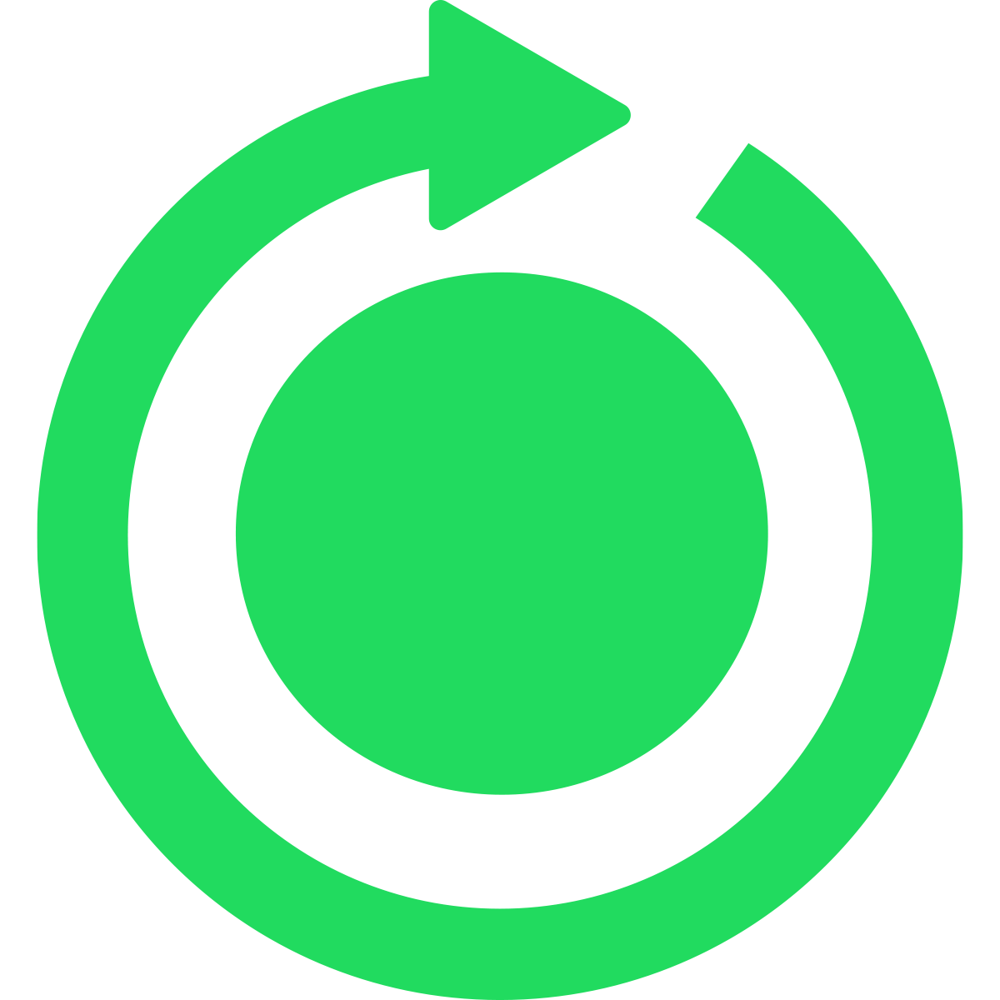

UNE NOTATION BASÉE SUR L'IMPACT ENVIRONNEMENTAL
Le Circul@rScore attribue une note qui évalue l’impact environnemental de chaque téléphone et permet de vous orienter vers des appareils plus durables. Sa notation va de 0 à 100, du rouge au vert en passant par le jaune.
15
50

90
SCORE MÉDIOCRE
Les smartphones avec un score médiocre ont un fort impact négatif sur l’environnement. Leurs processus de fabrication ne s’inscrivent pas dans une démarche bénéfique pour l’environnement. Pas ou peu d’efforts sont mis en place pour limiter l’empreinte carbone du téléphone et son inscription dans l’économie circulaire.
Ils sont symbolisés par un Circul@rScore rouge, qui peut varier de 0 à 45.
SCORE MOYEN
Les smartphones avec un score moyen ont un impact modéré sur l’environnement. Des efforts, pas encore suffisant, sont mis en place dans leurs processus de fabrication. Ils s’inscrivent dans une démarche bénéfique pour l’environnement, en limitant l’empreinte carbone du téléphone et en l’inscrivant dans l’économie circulaire.
Ils sont symbolisés par un Circul@rScore jaune, qui peut varier de 45 à 55.
SCORE BON
Les smartphones avec un bon score ont un faible impact sur l’environnement. Leurs processus de fabrication s’inscrivent de plus en plus dans une démarche bénéfique pour l’environnement. Des d’efforts sont mis en place pour limiter l’empreinte carbone du téléphone et son inscription dans l’économie circulaire.
Ils sont symbolisés par un Circul@rScore vert, qui peut varier de 56 à 100.
COMMENT EST-IL CALCULÉ ?
Le Circul@rScore est composé des notes des criteres de réparabilité et de développement durable. Il a pour objectif d’orienter les utilisateurs dans leur choix de smartphone dans une démarche de consommateur responsable pour l’environnement.
Pour calculer le Circul@rScore d’un smartphone nous avons mis au point une simple équation prenant en compte la moyenne des notes de developpement durable (environnement, conditions de travail, impacts des technologies, traitement des données personnelles) additionné la note de l’indice de réparabilité du smartphone, le tout divisé par 100.
L’achat d’un smartphone reconditionné inscrit d’autant plus l’utilisateur dans une démarche éco-responsable. S’il décide d’etre redirigé vers un site marchand vendant le téléphone reconditionné, il gagnera un bonus de +15 points sur son Circul@rScore.